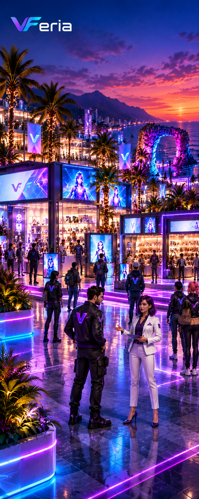

Más visibilidad
Presenta tu emprendimiento en un entorno digital innovador y amplía tus oportunidades de descubrimiento.
01Lleva tu marca a un centro comercial digital. Presenta tus productos, conecta con nuevos clientes y forma parte de una experiencia virtual pensada para emprendedores.

Un centro comercial digital inspirado en Antofagasta, donde los emprendimientos pueden exhibir su identidad y sus productos en un entorno virtual.
VFeria conecta a los emprendedores con espacios virtuales para mostrar lo que hacen. AntofaVirtual es nuestra propuesta de centro comercial digital: un entorno inmersivo que busca acercar la experiencia de recorrer tiendas a más personas.
Una presencia digital atractiva y flexible para presentar tu negocio.
Presenta tu emprendimiento en un entorno digital innovador y amplía tus oportunidades de descubrimiento.
01Organiza tu catálogo con imágenes, precios y descripciones para que las personas conozcan tu oferta.
02Una experiencia pensada para acercar tu espacio virtual a usuarios desde distintos dispositivos.
03Facilita las consultas con enlaces que permiten iniciar una conversación por WhatsApp.
04Cuéntanos sobre tu emprendimiento y conversemos sobre cómo participar en VFeria.